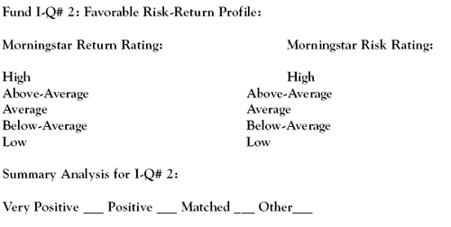

"The history of the stock and bond markets shows that risk and reward are inextricably intertwined. Do not expect high returns without high risk. Do not expect safety without correspondingly low returns." -William Bernstein, "The Four Pillars of Investing" (2002)
Investment research studies throughout the years have confirmed that the general investing public, or non-professional investors, have a pronounced tendency to focus on an investment's return. While risk is not necessarily ignored, it certainly seems to play second fiddle to return in most individual investors' decision-making processes.
As applied to mutual funds, you will learn the importance of the risk-return relationship in selecting quality mutual funds. In addition, we will explain the importance of understanding the concept of total return, which is the key component of a fund's investment performance. (For more insight, read Determining Risk And The Risk Pyramid.)
We'll also identify an discuss the significance of a favorable risk-return profile as one of the more valuable investment qualities to be considered in selecting a mutual fund.
In the investing world, there are a number of highly technical, sophisticated metrics that are used to measure investment risk-return. The most commonly used of these indicators include alpha, beta, r-squared, standard deviation and the Sharpe ratio. (For background reading, see Five Stats That Showcase Risk.)
Calculating and Interpreting Risk Measurements
It is safe to say that few, if any, non-professional investors, have the faintest idea how to calculate and/or interpret these measurements. That is the so-called bad news. The good news is that Morningstar and Value Line fund reports do all the statistical analysis for us and provide easy-to-understand risk and return evaluations. Essentially, these come in five different varieties: high, above-average, average, below-average, and low, or words to that effect.
It is a universally accepted principle of investing that risk and return are commensurate. This fancy terminology simply tells us that the level of risk determines the level of return. As a result, it is unusual that a low-risk investment will produce a high return. Of course, the inverse of this relationship is also true.
Asset Allocation and Diversification
Prior to selecting individual mutual funds, or any other investment, for a portfolio, an investor should decide on an appropriate asset allocation. For the sake of this discussion, let's say that a moderate 60% stock and 40% bond apportionment is made. Diversifying within these allocations then requires that the investor select investments (funds, stocks, and/or bonds) that are complementary this moderate risk-return investing strategy. (For more insight, see Achieving Optimal Asset Allocation.)
Risk is an inherent part of investing. In order to get a reasonable return on an investment, risk has to be present. A riskless asset will produce little or no return. The intelligent investor manages risk by recognizing its existence, measuring its degree in any given investment and realistically assessing his or her capacity to take risk. There is nothing wrong with investing in a high-risk fund if the fund's return is equally high. The questions to ask are: Can I afford the loss if it occurs? Am I emotionally prepared to deal with the uncertainties of high-risk investments? Do I need to take this kind of risk to achieve my investment goals? (To help answer these questions, read Personalizing Risk Tolerance.)
A prudent investor will seek to match and/or offset risk by assembling a reasonable number of mutual funds with favorable risk-return profiles in a diversity of fund categories. This is done by first identifying a mix of mutual funds according to company size (market-cap), investing style (value, growth, and blend) and asset allocation (stock and bond). By choosing from these funds, you can find those that are characterized as having returns that exceed their risks, or at least match them. This would represent a favorable risk-return profile, or spread, and is a key fund investment quality.
Return to the Main Menu.
The return on any investment, measured over a given period of time, is simply the sum of its capital appreciation and any income generated divided by the original amount of the investment, which is expressed as a percentage. The term applied to this composite calculation is total return.
However, there is a difference in this simple concept as applied to stocks and mutual funds. Unfortunately, a great many mutual fund investors do not seem to have a clear understanding of a fund's total return. The relationships between a fund's net asset value (NAV), yield (income) and capital gains distributions can be confusing. For stock investors, calculating and understanding their total return is relatively easy. By comparing how total return is derived for both stocks and mutual funds, you'll be able to better understand how this measure works for mutual funds.
Stock Total Return
We begin our illustration with a share of XYZ Company that is bought for $30 at the beginning of the year. During the year, its price fluctuates, but it closes the year at $33, which represents a nice percentage return on the investment of 10% ($3/$30).
But, things get even better because XYZ paid an annual dividend of $1 per share. This dividend equals an additional 3.3% return ($1/$30). Adding together the capital appreciation (price increase) of 10% and the income return (dividend) of 3.3% gives us a one-year total return for XYZ Company stock of 13.3%. However, remember that unless you sell XYZ stock, the price appreciation gain remains in the stock price, or is unrealized. (For more on this concept, see What are unrealized gains and losses?)
Fund Total Return
With mutual funds, explaining total return is a bit more complicated. We begin with a share of the ABC Fund, which is purchased at its net asset value (price) of $16 per share. A fund's NAV is derived by dividing the value of its portfolio securities (the fund's assets), less any accrued fees and expenses (the fund's liabilities), by the number of fund shares outstanding.
Here's an illustration of the computation of net asset value for the ABC Fund:
The fund's cash and cash equivalents = $200,000
The fund's stock holdings at market prices:
Total market value of stock holdings = $1,500,000
The fund's total assets = $1,700,000
Less the fund's liabilities = $100,000
The fund's tolal net assets = $1,600,000
The fund's total shares outstanding: 100,000
The fund's NAV: $16 ($1,600,000/100,000)
Remember that mutual funds are priced once a day, at the end of the day. Unlike stocks, where prices are moved by the supply and demand forces of the marketplace, fund prices are determined by the value of the underlying securities in the fund.
In our example, ABC is a hybrid stock/bond fund with a growth-income orientation. Apart from capital gains, its individual portfolio holdings will generate dividends and interest. By law, mutual funds must distribute these to the fund's shareholders. ABC's income distribution (its dividends to shareholders) for the year amounted to $1 per share. In addition, the fund's trading activities (the buying and selling of securities) generated a realized capital gain of $3 per share, which ABC also distributed to its shareholders.
The ABC Fund passed along all the earnings and capital appreciation it generated - $4 ($1 in dividend distributions and $3 in a capital gains distribution) to its shareholders for a total return of 25% ($4/$16). Here again, unlike a stock, by paying out all its capital gains, the ABC Fund's price, or NAV, remains at or close to $16. In this scenario, if a fund investor only focused on the movement in ABC's NAV, the results would not look very good. It's even possible for a fund's NAV to decline, but still have good income/capital gain distributions, which will be reflected in a positive total return.
Obviously, a fund's NAV does not tell the whole mutual fund performance story, but its total return does. It captures a fund's changes in NAV, its income distribution and capital gains distribution, which, as a whole, are the true test of fund's return on investment.
Return to the Main Menu.
As mentioned previously, a mutual fund's risk-return profile is important for a number of reasons:
As is always the case with any financial indicator, fund risk-return ratings should not be looked at in isolation. It would be prudent to correlate these findings with the long-term (five to 10 years) total returns and the management costs of the fund. For example, in comparing two funds with equal performance records, the one with less risk would warrant a higher investment quality rating than the other.
It is worthwhile to look at the risk-return relationship of some mutual funds to see this fund criterion in action. Morningstar's fund report provides an easy-to-use rating, which is the one we will apply here to a selection of stock and bond funds.
After perusing the following fund information, which fund do you think goes to the head of the class for the best positive risk-return spread?
| Large-Cap Stock | Return | Risk |
| Fidelity Contrafund (FCNTX) | High | Below-Average |
| Janus (JANSX) | Average | Above-Average |
| Vanguard U.S, Growth (VWUSX) | Average | Average |
| Marsico Focus (MFOCX) | Above-Average | Average |
| White Oak Select Growth (WOGSX) | Average | High |
| Bond | Return | Risk |
| Pioneer High-Yield (TAHYX) | Average | Above-Average |
| Fidelity Intermediate (FTHRX) | Average | Below-Average |
| High | Low |
If you chose the Davis Appreciation & Income Fund, you have grasped the concept behind fund investment quality. In general, most mutual funds will have but one positive "notch," or spread, between their return and risk rating spread. The Marsico and Fidelity Intermediate funds are examples of this status, while the stellar Fidelity Contrafund has a two "notch" positive spread. The Janus, White Oak, and Pioneer funds all show negative spreads, which is a circumstance that should raise some serious concern for fund investors.
Return to the Main Menu.
This is the entry we need to complete in the Fund Investment Quality Scorecard for an analysis of a fund's risk-return profile:
Obviously, the greater the positive risk-return spread, the more favorable the rating. Negative spreads fall into the "other" classification and are not indicative of investment quality in the Fund I-Q Scorecard.
It is important to understand that all mutual fund investment research services use similar risk-return qualifiers. These indicators measure a fund's risk-return relationship within the context of its investment category (large cap value, small cap growth, etc.) and not the whole mutual fund universe. Each fund category has differing investment characteristics, making a universal risk-return qualification impossible - and inappropriate. With mutual fund risk-return classifications, as well as other types of investments, it is simply a necessity to make "apples to apples" comparisons.
Morningstar's well-known star ratings reflect historical risk-adjusted performance and are extremely popular with investors shopping for mutual funds. However, while helpful in this process, even Morningstar cautions the investing public that "the star rating is a useful tool, but it's no substitute for doing your homework. Investing is much too complex for any single measure to sum up the entire merit of a security."
Therefore, serious fund investors should embrace the use of the Fund Investment-Quality Scorecard in making fund investment decisions. While this approach does require a bit of "homework," it will allow for a solid, thorough treatment of mutual fund analysis.
{kind=link}